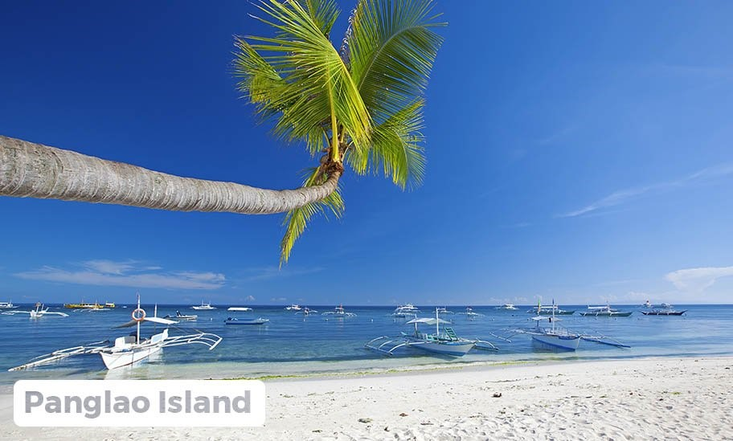
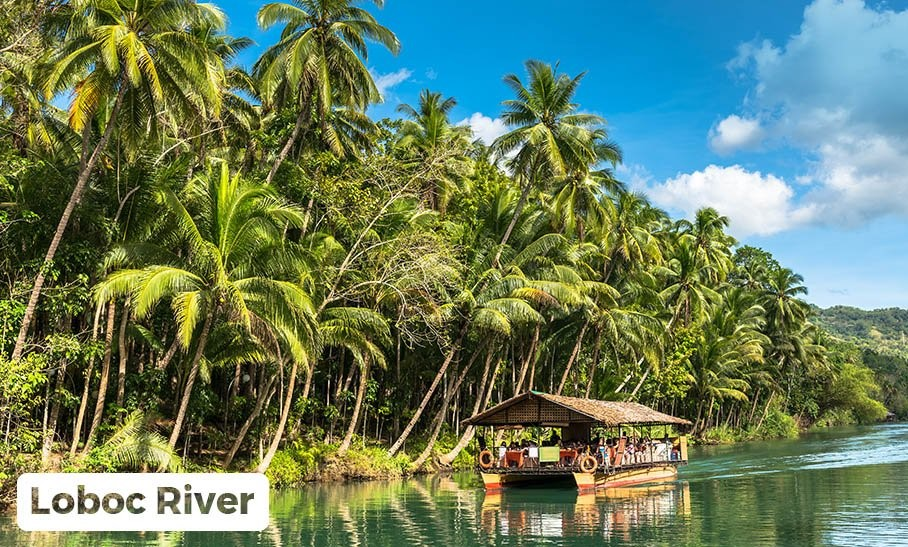
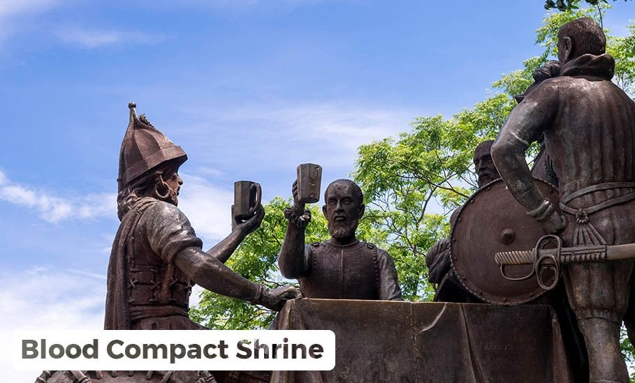
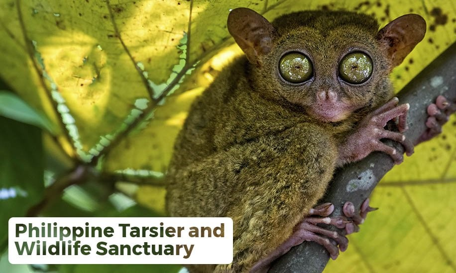
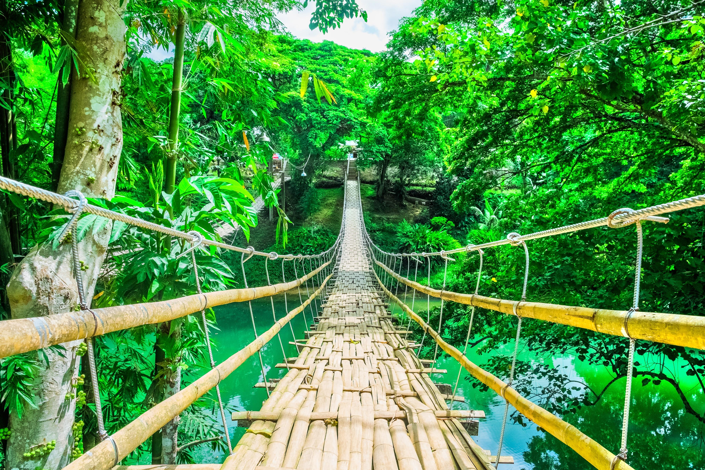
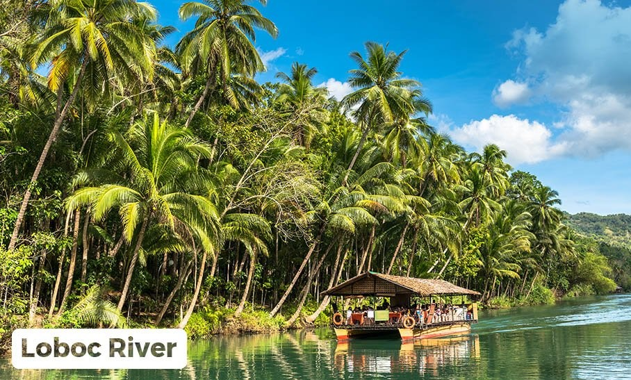
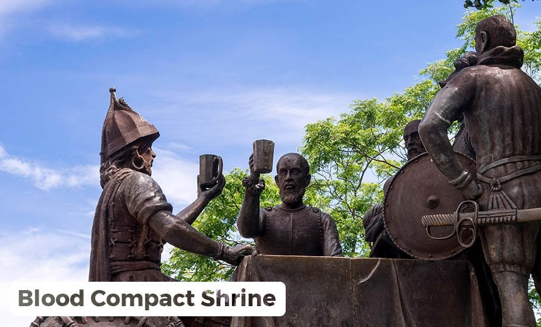
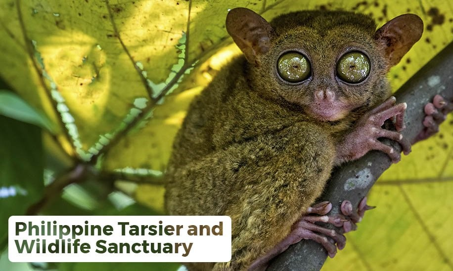
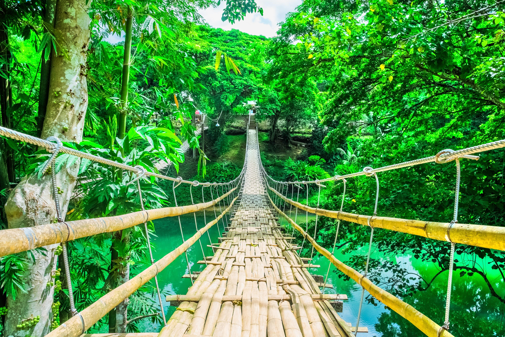

Other Places to Visit in Bohol:

Panglao Island
If you’re the type of traveler who loves the beach, Bohol is a catch. Known for its white-sand beaches, islands, and diving sites, the province never disappoints its visitors especially if we’re talking about the Panglao Island—Bohol’s very own piece of Boracay. Aside from the stunning beaches, its marine life makes it a great snorkeling and diving spot as well.
 Chocolate Hills
Chocolate Hills
Chocolate Hills is the most famous Bohol tourist destination. There are more than 1,000 symmetrical mounds, conical and dome-shaped that most people liken them to Hershey’s Kisses. It is called the Chocolate Hills not because it’s made of chocolate but because of its color.
 Loboc River
A Bohol tour wouldn’t be complete without hopping on the famous Loboc River Cruise. Tour guides usually bring their guests here for lunch while exploring the Loboc River. At the middle of the tour, your cruise will stop by at a place where the locals will play musical instruments and perform traditional dances.
 Blood Compact Shrine
The Sandugo or Blood Compact Shrine monument in Tagbilaran is a landmark at the site of the first international treaty of friendship between Spaniards and Filipinos. This Tagbilaran tourist spot depicts Sikatuna and Legazpi at the famed Sandugo moment.
 Philippine Tarsier and Wildlife Sanctuary
One of the must-visit Bohol tourist spots is the Philippine Tarsier and Wildlife Sanctuary. It is a large forest home to the endangered tarsiers. These 45 million-year-old small nocturnal primates with big round eyes usually cling to low branches or the trunks of slim trees. They are very delicate and emotionally-sensitive creatures that get stressed easily.
 Bamboo Hanging Bridge
Sure hanging bridges are not new sights in the Philippines but have you seen one that’s made entirely out of bamboo? Also called Tigbao Hanging Bridge by the locals, this hanging bridge is made of woven bamboo straps and is suspended 83 feet above the Loboc River. Crossing this hanging bridge lets you see Loboc River in a different perspective.
If you’re the type of traveler who loves the beach, Bohol is a catch. Known for its white-sand beaches, islands, and diving sites, the province never disappoints its visitors especially if we’re talking about the Panglao Island—Bohol’s very own piece of Boracay. Aside from the stunning beaches, its marine life makes it a great snorkeling and diving spot as well.
Chocolate HillsChocolate Hills is the most famous Bohol tourist destination. There are more than 1,000 symmetrical mounds, conical and dome-shaped that most people liken them to Hershey’s Kisses. It is called the Chocolate Hills not because it’s made of chocolate but because of its color.
 Loboc River
A Bohol tour wouldn’t be complete without hopping on the famous Loboc River Cruise. Tour guides usually bring their guests here for lunch while exploring the Loboc River. At the middle of the tour, your cruise will stop by at a place where the locals will play musical instruments and perform traditional dances.
 Blood Compact Shrine
The Sandugo or Blood Compact Shrine monument in Tagbilaran is a landmark at the site of the first international treaty of friendship between Spaniards and Filipinos. This Tagbilaran tourist spot depicts Sikatuna and Legazpi at the famed Sandugo moment.
 Philippine Tarsier and Wildlife Sanctuary
One of the must-visit Bohol tourist spots is the Philippine Tarsier and Wildlife Sanctuary. It is a large forest home to the endangered tarsiers. These 45 million-year-old small nocturnal primates with big round eyes usually cling to low branches or the trunks of slim trees. They are very delicate and emotionally-sensitive creatures that get stressed easily.
 Bamboo Hanging Bridge
Sure hanging bridges are not new sights in the Philippines but have you seen one that’s made entirely out of bamboo? Also called Tigbao Hanging Bridge by the locals, this hanging bridge is made of woven bamboo straps and is suspended 83 feet above the Loboc River. Crossing this hanging bridge lets you see Loboc River in a different perspective.